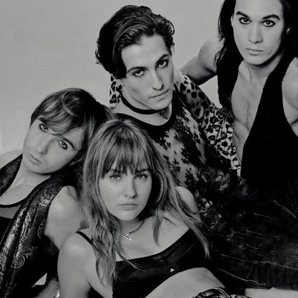

樂團介紹
天際月光樂團（丹麥語：Måneskin）是來自義大利羅馬的流行搖滾樂團，由主唱達米亞諾·大衛（Damiano David）、貝斯手維多利亞·德·安吉利斯（Victoria De Angelis）、吉他手托馬斯·拉吉（Thomas Raggi）和鼓手伊森·託基奧（Ethan Torchio）組成。
該樂團以參加2017年才藝表演義大利版《X Factor》第十一季而聞名。他們憑藉歌曲〈閉嘴 乖乖聽話〉（"Zitti e buoni"）贏得2021年聖雷莫音樂節和2021年歐洲歌唱大賽。
